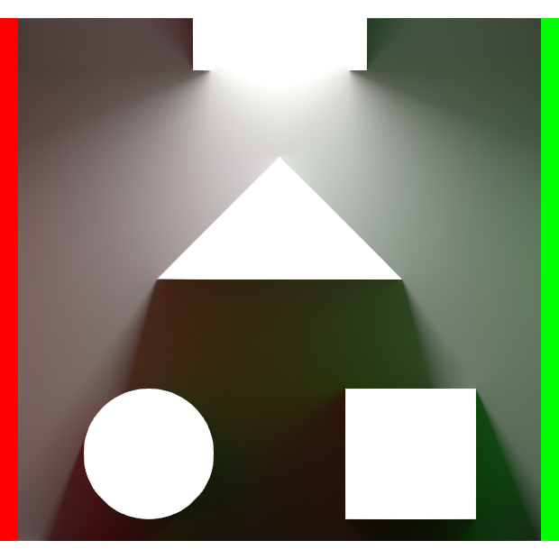

Overview
For this project, we hope to implement 2D global illumination. Our most ambitious goal is to use Global Line Radiosity, which has been shown to render realistic scenes in real-time. Failing that, we could implement a Monte Carlo pathtracer similar to the one in Assignment 3 - with the added ability to see samples added in real-time.
 How it looks when changing the scene
How it looks when changing the scene
|
 After staying still for several seconds
After staying still for several seconds
|
 2D Global Line Radiosity
2D Global Line Radiosity
|
Parallel Ray-bundling
 Instead of raycasting randomly from different positions, we use bundles of parallel rays. Both methods yield the same result (Hachisuka 2005).
Instead of raycasting randomly from different positions, we use bundles of parallel rays. Both methods yield the same result (Hachisuka 2005).
|
 Radiance is passed between intersection points.
Radiance is passed between intersection points.
|
 Similar to traditional pathtracing, we can calculate bounces recursively.
Similar to traditional pathtracing, we can calculate bounces recursively.
|
Components of Global Line Radiosity
 Direct Lighting
Direct Lighting
|

Indirect Lighting
|
 Combined
Combined
|
 We can cheaply calculate lighting effects, such as sub-surface scattering
We can cheaply calculate lighting effects, such as sub-surface scattering
|
- Title, Summary and Team Members
- For this project, we hope to implement 2D global illumination. Our most ambitious goal is to use Global Line Radiosity, which has been shown to render realistic scenes in real-time. Failing that, we could implement a Monte Carlo pathtracer similar to the one in Assignment 3 - with the added ability to see samples added in real-time.
Joseph Moon: TODO(SID)
Abdulrahman AlZenki: 25740621
Lawrence Elkins: TODO(SID)
- TODO: Problem Description
- Here you should provide the context for your idea. Describe the problem that you are trying to solve, why it is important, where it is challenging. Give us a general idea on how you are going to solve it.
- TODO: Goals and Deliverables
- This is the most important part of your proposal. You should carefully think through what you are trying to accomplish, what results you are going for, and why you think you can accomplish those goals. For example:
- Since this is a graphics class you will likely define the kind of images you will create (e.g. including a photo of a new lighting effect you will simulate).
- Define how you will measure the quality / performance of your system (e.g. graphs showing speedup, or quantifying accuracy). It may not be possible to define precise target metrics at this time, but we encourage you to try.
- What questions do you plan to answer with your analysis?
- You should break this section into two parts: (1) what you plan to deliver, and (2) what you hope to deliver. In (1), describe what you believe you must accomplish to have a successful project and achieve the grade you expect (i.e. your baseline plan -- planning for some unexpected problems would make sense). In (2), describe what you hope to achieve if things go well and you get ahead of schedule (your aspirational plan).
- TODO: Schedule
- In this section you should organize and plan the tasks and subtasks that your team will execute. Since presentations are ~4 weeks from the due-date of the proposal, you should include a set of tasks for every week.
- TODO: Resources
- List what resources, e.g. books, papers and/or online resources that are references for your project. List the computing platform, hardware and software resources that you will use for your project. You have a wide latitude here to use what you have access to, but be aware that you will have to support and trouble-shoot on your platform yourselves. If you are starting from an existing piece of code or system, describe and provide a pointer to it here.